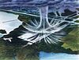

downburst

Definition: In meteorology, a downburst is a strong downward and outward gushing wind system that emanates from a point source above and blows radially, that is, in straight lines in all directions from the area of impact at surface level. It originates under deep, moist convective conditions like Cumulus congestus or Cumulonimbus. Capable of producing damaging winds, it may sometimes be confused with a tornado, where high-velocity winds circle a central area, and air moves inward and upward. These usually last for seconds to minutes. Downbursts are particularly strong downdrafts within thunderstorms (or deep, moist convection as sometimes downbursts emanate from cumulonimbus or even cumulus congestus clouds that are not producing lightning).
Source: Wikipedia
Wikipedia Page (Something wrong with this association? Let us know.)
Wikidata Page (Something wrong with this association? Let us know.)